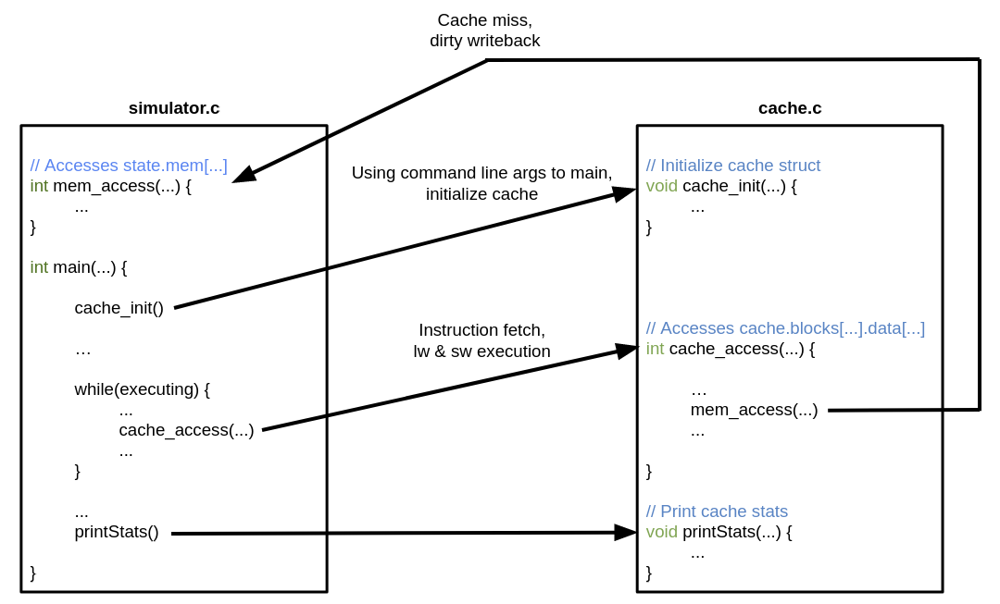
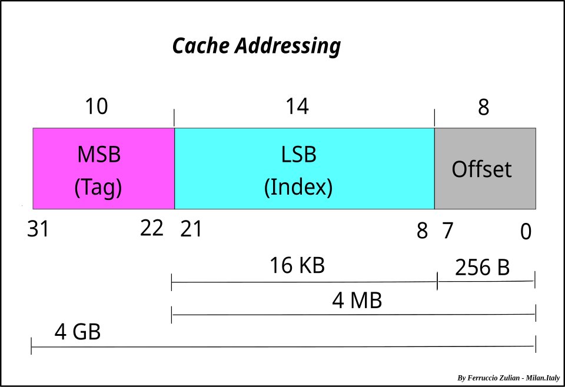
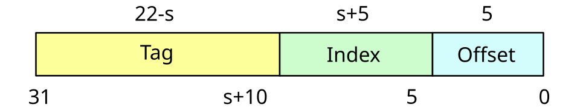
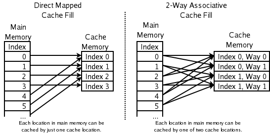
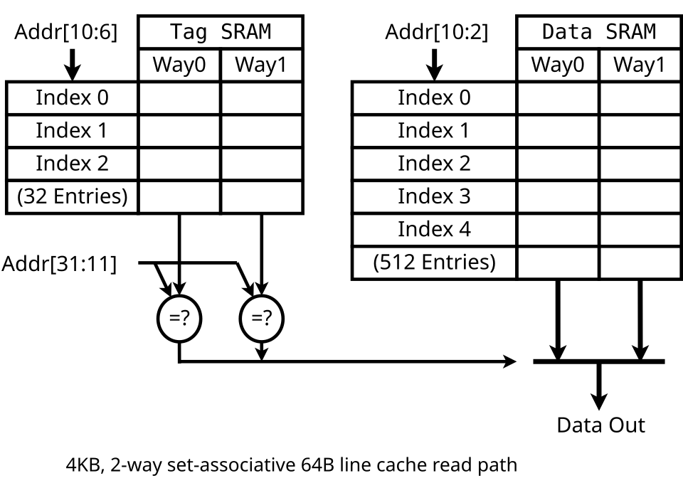
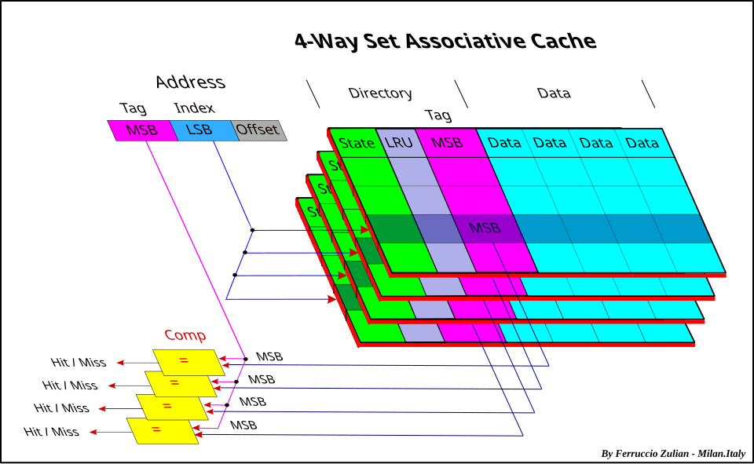
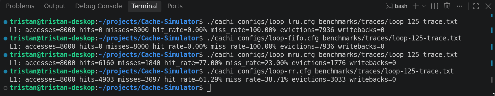
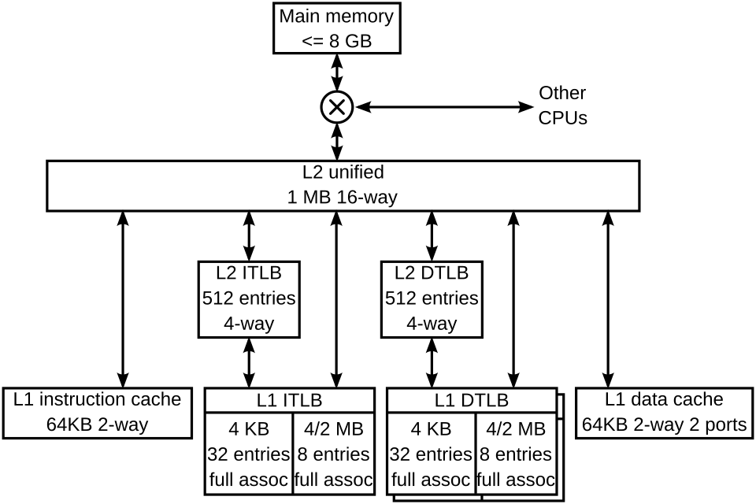
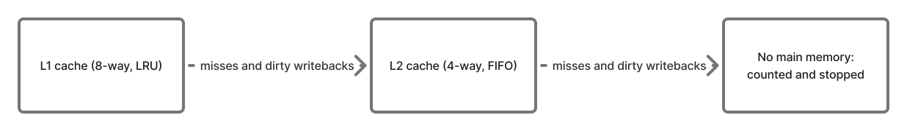
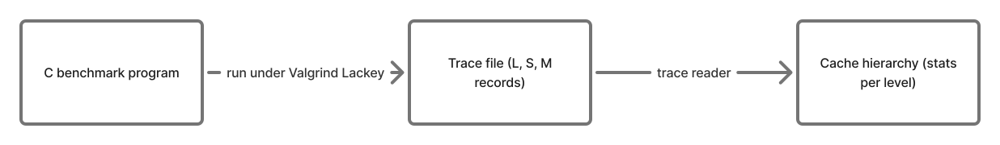

This project was inspired by the LC2K assembly cache simulator I built for EECS 370. That simulator modeled a single cache, supported only LRU replacement, and used LC2K word addresses instead of conventional byte addresses. It also took input directly from an LC2K assembly simulator, so it could not process general memory trace files.

I enjoyed working on this LC2K cache simulator and wanted to revisit the idea by creating a sort of "remastered" version. This project, "Cachi," supports multiple cache levels, several replacement policies, conventional byte-addressed memory, and external trace files. I also implemented it in C rather than C++, which gave me more practice with C.
This simulator reads memory-access traces line by line and models how addresses move through a configurable cache hierarchy. I wanted each level to be configurable on its own: an L1 and an L2 can have different capacities, block sizes, associativities, and replacement policies. This makes it possible to explore how the organization of each cache affects hits, misses, and evictions. Each run follows the same steps:
I decided that the simulator should not store any data. A cache simulator only needs to know whether an address would hit and which line a miss would replace, so Cachi tracks tags, valid bits, and timestamps and nothing else. Storing the actual bytes would have meant a lot more code without changing any of the benchmarking statistics.
The cache configuration defines capacity, block size, and associativity. Capacity is the total storage in bytes; a block is the unit transferred into a cache; and associativity is the number of lines in each set. These values determine how the cache is divided:
$$ \begin{aligned} \text{num\_blocks} &= \frac{\text{capacity}}{\text{block\_size}} \\ \text{num\_sets} &= \frac{\text{num\_blocks}}{\text{associativity}} \end{aligned} $$For example, a 32 KiB cache with 64-byte blocks and 8-way associativity contains 512 blocks and 64 sets. Cachi checks that the block size and set count are powers of two, and that the configuration divides evenly, so the address can be split into bit fields.

I added that check because the lookup
pulls the offset and set index straight out of the address with shifts and masks. With 48 sets, for
example, masking with num_sets - 1 (47, or 101111 in binary) can never
produce set numbers 16 through 31, so a third of the cache would sit unused, and the tag would no
longer start at a clean bit boundary. Rejecting those configurations up front was simpler than making
every lookup handle them.
For a 64-bit address, the low bits select a byte within a block, the next bits select a set, and the remaining high bits are the tag. The offset and index widths follow directly from the block and set counts:
$$ \begin{aligned} \text{offset\_bits} &= \log_2(\text{block\_size}) \\ \text{index\_bits} &= \log_2(\text{num\_sets}) \\ \text{tag\_bits} &= 64 - \text{index\_bits} - \text{offset\_bits} \end{aligned} $$In the 32 KiB example, the byte offset uses 6 bits and the set index uses 6 bits. The remaining 52 bits identify the memory block within that set. The cache only needs to compare this tag against the valid lines in the selected set.

Cachi computes those widths once, when it builds each cache from its config:
const size_t num_blocks = capacity / block_size;
const size_t num_sets = num_blocks / associativity;
const uint8_t index_bits = log2_power_of_two(num_sets);
const uint8_t offset_bits = log2_power_of_two(block_size);
cache->tag_bits = ADDRESS_BITS - index_bits - offset_bits;
Here, I split the capacity into blocks and sets, then take the base-2 log of the set count and block size to get the index and offset widths, leaving the rest of the 64-bit address for the tag.
A cache needs a rule for deciding which lines can hold each memory block. My simulator uses the standard set-associative mapping: the memory block number modulo the number of sets selects its set. In other words, blocks whose numbers differ by the number of sets map to the same set, forming a repeating stripe across the cache.

With a power-of-two number of sets, the modulo is implemented by taking the index bits from the
address after removing its block offset. This is why cache dimensions are almost always powers of
two: division and modulo would normally need arithmetic hardware on every access, but with powers of
two they reduce to selecting a fixed range of address bits, which is just wiring.
Strangely, not every design follows this convention: Intel processors whose last-level cache is split into a non-power-of-two
number of slices (one per core on six- or ten-core chips, for example) pick the slice with a hash of
many address bits instead. The tag is everything above those fields. For a 64-byte
block and 64 sets, for example, address A maps to the set selected by
(A >> 6) & 63.
The cache stores all of its lines in one flat array. Lines belonging to a set occupy a contiguous range, so the simulator computes the start and end indices for that set and scans only those ways. This gives each configurable cache level a single allocation while the indexing arithmetic preserves the set boundaries.

An alternative design for this would be to create cache set structures, with the cache holding an array of sets and each set holding its own lines. That mirrors the conceptual model more directly and makes per-set bookkeeping easier, but it adds a layer of allocation and indirection I thought would be unnecessary for this project.
const uint64_t set_index =
(address >> cache->offset_bits) & (cache->num_sets - 1);
const uint64_t tag =
address >> (cache->offset_bits + cache->set_index_bits);
const size_t ways = (size_t)cache->config.associativity;
const size_t start = (size_t)set_index * ways;
const size_t end = start + ways;
for (size_t i = start; i < end; ++i) {
CacheLine* line = &cache->cache_lines[i];
if (line->valid && line->tag == tag) {
return CACHE_HIT;
}
}
A lookup pulls the set index and tag out of the address with a shift and a mask, then scans only that set's slice of the array for a valid line with a matching tag.
For the earlier example, set 3 occupies array indices 24 through 31: index 3 multiplied by 8 ways, followed by the next 8 lines. A hit requires both a valid line and a matching tag. The offset does not affect the lookup because the cache tracks whole blocks, not individual bytes.
When every way in a set is occupied and a new block maps there, the simulator needs to choose a victim. I wanted to implement four fairly simple policies, while leaving room to add something more complex in the future:

When implementing LRU and FIFO, I found that each cache line needed to store two timestamps: when it
was last accessed and when it was inserted. I stored both as fields in each line's
CacheLine struct, stamped from a per-cache access counter, because
every policy only compares lines within one set and can read them straight off the lines it is
already scanning. MRU reuses the last-access time, and random replacement doesn't need either.
size_t replacement_choose_victim(const Cache* cache,
size_t start, size_t end) {
switch (cache->config.replacement) {
case LRU: return choose_lru_line(cache, start, end);
case FIFO: return choose_fifo_line(cache, start, end);
case MRU: return choose_mru_line(cache, start, end);
case RR: return choose_random_line(start, end);
}
return start;
}
Each policy is its own small function over the set's range, and a switch on the cache's configured policy picks which one runs; it is only called once the set has no empty lines left.
MRU was a policy I was curious about. It came up quite a bit while I was researching replacement policies, but evicting the line you just used seemed a bit odd. I figured the only case in which MRU may do well is when a program loops over data that is slightly too big for the cache (which is where LRU falls apart). I wanted to see if my simulator would confirm this hypothesis, so I built that case and ran it.
The setup is a 4 KiB, 8-way L1 with 64-byte blocks, which works out to 64 lines in 8 sets. I only changed the replacement policy between runs:
[L1]
capacity = 4096
block_size = 64
associativity = 8
replacement = MRU
The trace loops 100 times over an array of 80 blocks, 25% more than the cache can hold. It reads once per block, so every hit comes from a block surviving until the next pass, not from neighboring reads in the same block.
L 10000,8
L 10040,8
L 10080,8
...
L 113c0,8
L 10000,8
Here is what each policy did with it:

loop-125-trace.txtLRU and FIFO never hit once. In a sequential loop, the oldest block in a set is always the next one the loop is about to need, so both policies throw it out right before it comes back. MRU keeps most of the array in place and only gives up the line it just finished with, which got it to \(\mathbf{77\%}\).
Random ended up in between at \(\mathbf{61.29\%}\), and it gave exactly that number on every run. I never call
srand, so rand() produces the same sequence each time. I left it that way
because it makes runs comparable. Growing the array to twice the cache size keeps the same order:
LRU and FIFO at \(\mathbf{0\%}\), MRU at \(\mathbf{46.38\%}\), and random at \(\mathbf{19.20\%}\). When the array fits in the cache, all four
policies score the same \(\mathbf{99\%}\), since nothing ever gets evicted.
Cache levels are defined in a small configuration file. Each section describes one cache, including the replacement policy. The sample below defines an 8-way L1 and a 4-way L2 with different block sizes and policies:
[L1]
capacity = 32768
block_size = 64
associativity = 8
replacement = LRU
[L2]
capacity = 262144
block_size = 64
associativity = 4
replacement = FIFO
On each access, Cachi checks levels in order. A hit ends the search; a miss fetches the block from the next level. Each lower level therefore only sees the misses from the level above it, plus any dirty blocks written back from above, which is why their access counts are smaller than L1's.

Cachi's hierarchy is a lot simpler than the one pictured. Each level is a single unified cache, so there is no split between instruction and data caches, and there are no TLBs, since trace addresses are used as-is without any virtual-to-physical translation. It also models one core, so nothing like the "other CPUs" link or coherence between caches. Finally, there is no main memory at the bottom: a miss in the last level simply ends the access, and the last level's dirty evictions are counted as writebacks to memory without going anywhere. In exchange, the number of levels and each level's size, associativity, and replacement policy all come from the config file.

// Visit every block this access touches, one request per block.
uint64_t block = cache_block_address(cache, address);
const uint64_t last_block = cache_block_address(cache, last_byte);
while (1) {
const uint64_t request = block > address ? block : address;
CacheEviction eviction;
const CacheAccessResult result =
cache_access(cache, request, operation, &eviction);
// A dirty victim is written back to the next level.
if (eviction.dirty) {
access_level(hierarchy, level + 1, eviction.address,
block_size, CACHE_WRITE);
}
// A miss fetches the whole block from the next level.
if (result == CACHE_MISS) {
access_level(hierarchy, level + 1, block,
block_size, CACHE_READ);
}
if (block == last_block) break;
block += block_size;
}
Each level splits an access by its own block size,
so an 8-byte read that starts 4 bytes before a block boundary becomes two requests. Each
cache_access() call returns a hit or a miss and reports whether it
evicted a dirty line. A dirty victim is written to the next level as a full block, and a miss
fetches the whole block from the next level, which can cascade further down.
Instead of writing traces by hand, I made the reader accept the output of Valgrind's Lackey tool with
--trace-mem=yes, so any C program I could compile became a test case. A record contains an operation, a
hexadecimal address, and an access size. For example:
S 1ffeffffa8,8
M 040373f6,1
L 04035e58,8The reader handles each operation like this:
L (load) is sent through as a read.S (store) is sent through as a write.M (modify) is sent through as a read followed by a write.I (instruction fetch) is ignored, since this project models data caches.The parsed address, size, and operation are passed to the hierarchy through a callback:
if (operation == 'I') continue;
if (operation == 'L' || operation == 'S') {
CacheOperation op = operation == 'L'
? CACHE_READ : CACHE_WRITE;
callback(address, size, op, context);
} else if (operation == 'M') {
callback(address, size, CACHE_READ, context);
callback(address, size, CACHE_WRITE, context);
}
Passing the size through is what lets the hierarchy split an access that crosses a block boundary into one request per block, instead of counting it as a single access.

I added small C programs to generate different access patterns, including sequential array access, Fibonacci recursion, and strided access. I compiled and ran them under Lackey, then saved the resulting traces so simulations are repeatable.
In the array benchmark, I marked the array volatile so the compiler wouldn't vectorize
the loops. That keeps every read and write as its own 8-byte access, so the trace matches the code:
#define N 10000
volatile uint64_t data[N] = {0};
for (int i = 0; i < N; i++) {
data[i] = i;
}
for (int i = 0; i < N; i++) {
data[i] += 1;
}
Sequential and strided patterns make it easier to see how block size and mapping affect locality.
The simulator reports hits, misses, evictions, and dirty-line writebacks separately for each level.
A run can be reproduced with ./cachi configs/example-multilevel.cfg
benchmarks/traces/array-trace.txt.
Cachi still cuts a few corners, and each one points to what I would change if I keep working on it: